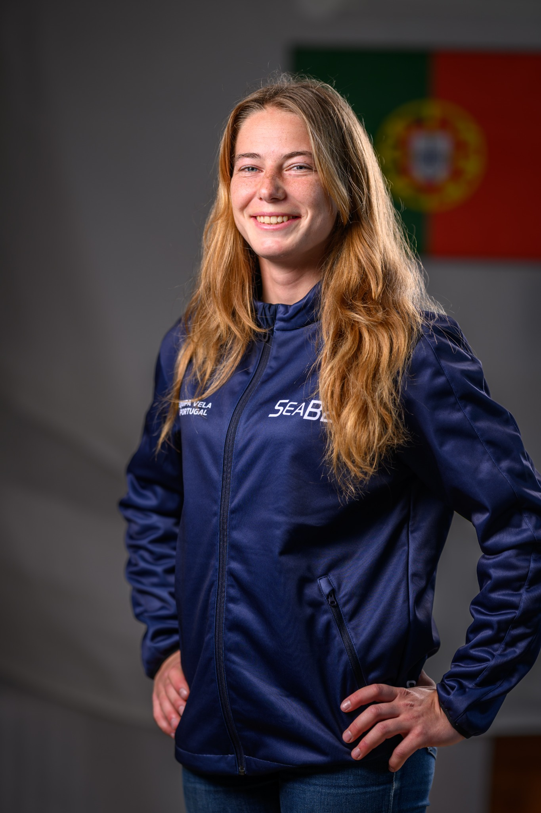

Equipa Olímpica e Alto RendimentoAtletas.
Atletas.
Portugal no mundo.
Conhece os velejadores da Equipa Olímpica e do Alto Rendimento, organizados por classe. Os perfis com fotografia oficial já estão a ser integrados e serão completados com apresentação, clube, currículo e resultados validados.
AtletasOrganizados
Organizados
por classe.
Nesta versão já utilizamos as fotografias institucionais disponibilizadas. Os perfis ainda sem fotografia mantêm um placeholder até recebermos o ficheiro correspondente.
Classe
02 atletas49er FX
Classe
04 atletas470


Classe
02 atletasFormula Kite
Classe
04 atletasILCA 6

Classe
03 atletasILCA 7
Classe
01 atletas